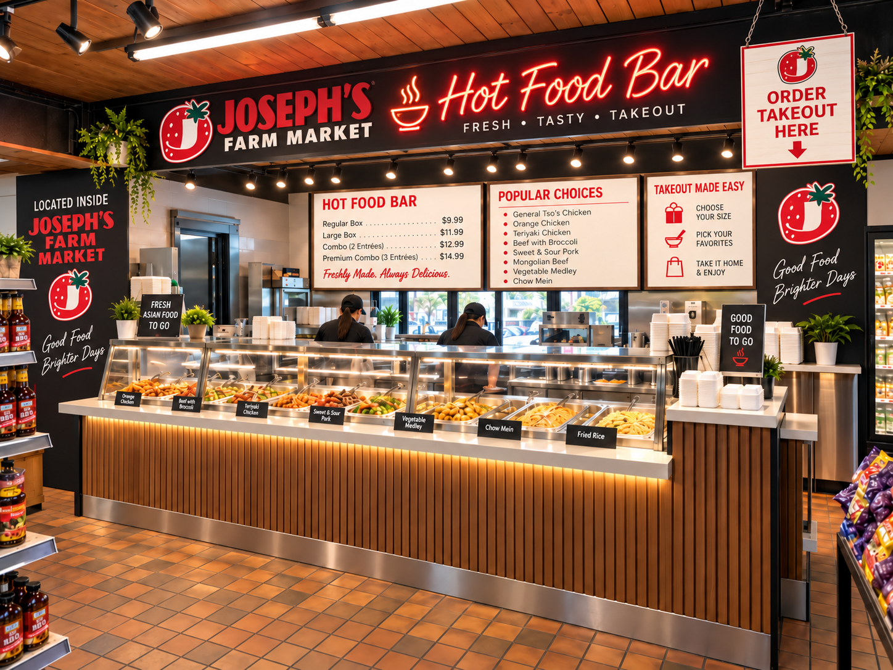

♨
Phở
Seven phở choices including Viet Nom Nom Special, rare beef, brisket, beef balls, tofu & vegetable, and chicken.
Phở, bánh mì, vermicelli, rice plates, summer rolls and Vietnamese desserts — all in one focused menu at Viet Nom Nom.

Viet Nom Nom is built around a focused Vietnamese menu, with every customer-facing category dedicated to Vietnamese food.
Seven phở choices including Viet Nom Nom Special, rare beef, brisket, beef balls, tofu & vegetable, and chicken.
Vietnamese sandwiches with special, chicken, pork, beef, pork sausage, or tofu & vegetable fillings.
Classic Vietnamese rice plates and vermicelli combinations, plus fresh summer rolls and desserts.